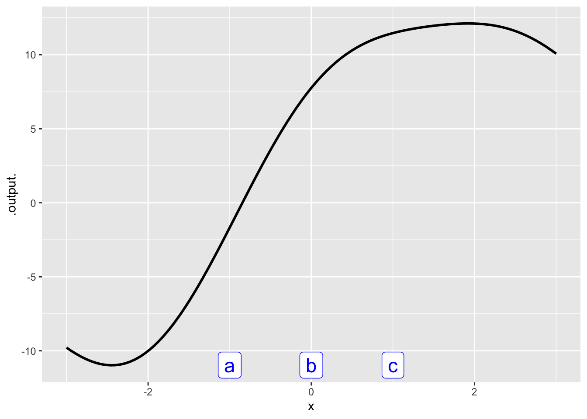

Testing numeric input
WarningRemember to hand in your work …
At any point, you can submit your answers by collecting them and uploading them to the class site.
No answers yet collected
If the answers that have been loaded automatically are not yours, press this button before starting your work:
Which of these is closest to \(\pi\)? closetopi
We live on Earth. 3Sm12x
Which season is coldest?
coldest-season

- What is the value at input (a)?
- What is the value at input (b)?
- What is the value at input (c)?